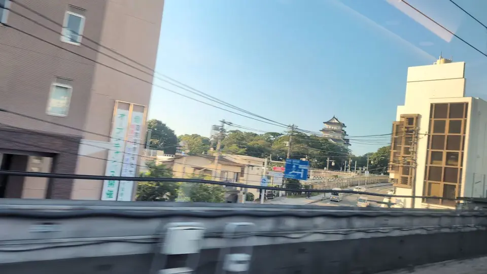
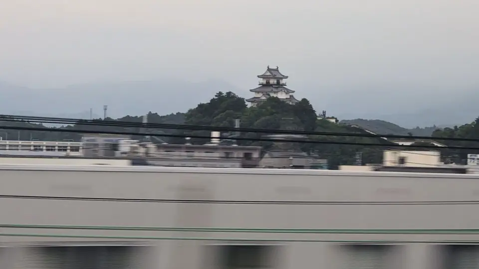
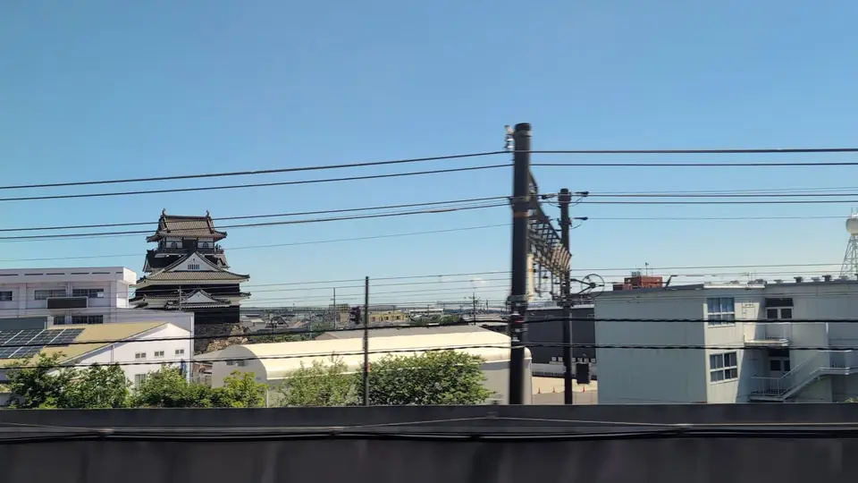
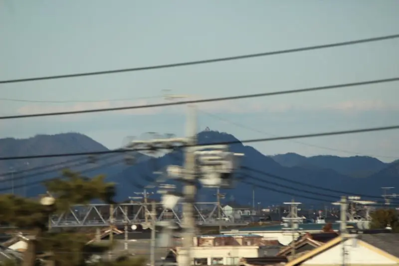
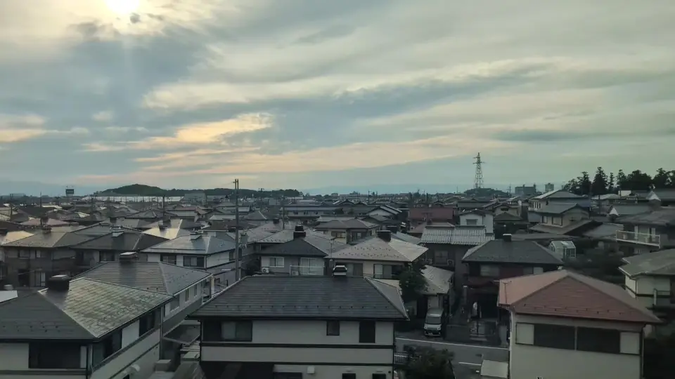
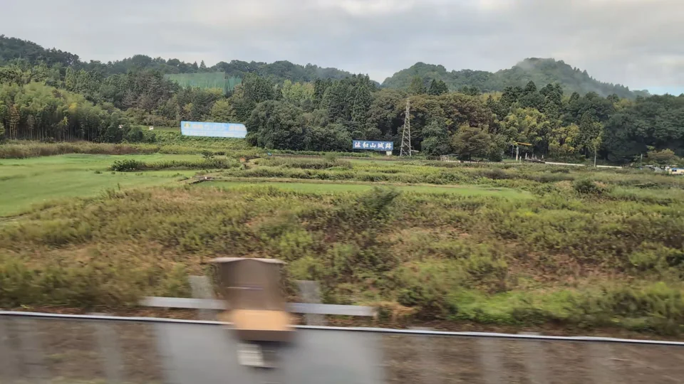
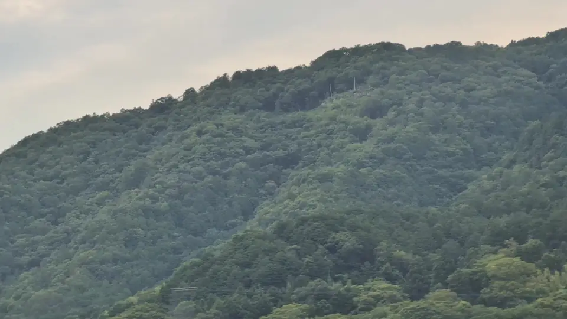
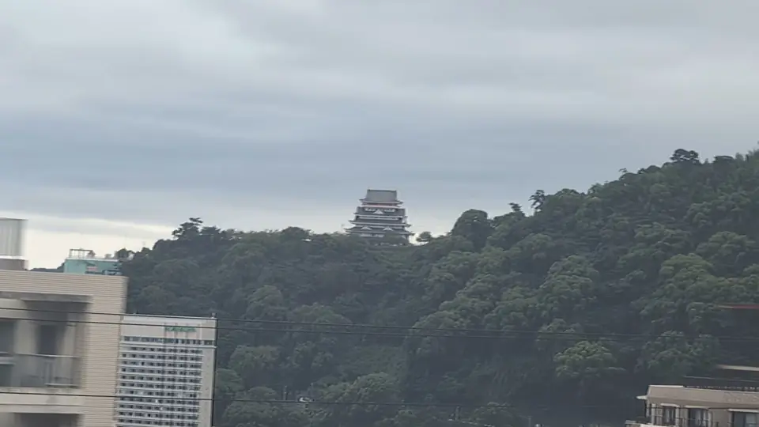
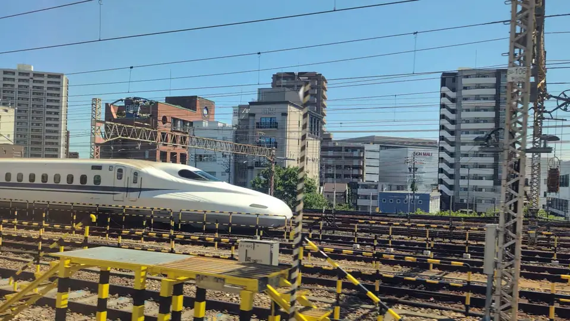

為什麼城堡出現在這裡
鐵路與城堡沿著同一條道路
街道、河川渡口、開闊平原：當年選擇築城的地方，後來也成了鐵路選擇的路線。
城市之間，新幹線窗外忽然有一座白色高塔探出屋頂，停留幾秒後就消失了。那是一座城。你看見的部分叫作 天守：高聳在弧形石垣上的木造塔樓，外圍原本有護城河、城門與較小的櫓。它不像歐洲城堡那樣是供人居住的石屋，而是 大名的統治據點。大名管理周邊領地，城牆下也逐漸形成城下町。
城堡建在人與貨物原本就往來的地方：古街道的宿場、大河的淺灘與渡口，以及能俯瞰平原的山丘。江戶（今日的東京）通往京都、大阪的道路，是幕府最重視的交通線，因此沿途接連出現城堡。
1870年代開始興建的鐵路，也因坡度平緩、容易跨河、人口聚集而選擇相同地帶。昔日的城下町成了車站所在的城市，東海道新幹線也大致沿著古街道走廊前進。車窗外的城並非偶然。
今天看到的天守往往不是原來的建築。1873年新政府下令廢止多數城堡後，許多天守被拆除；另一些毀於1945年的空襲。戰後數十年間，陸續以鋼筋混凝土重建。下方石垣通常仍是原物；未重建天守的城，留下的則是山形與城牆。
每座城在車窗裡只停留幾秒到十多秒。有的緊鄰鐵道，有的只是遠方山頂上的小點。知道應看哪一側，就已完成大半準備。
天守
尋找天守與櫓
從軌道旁的天守到山頂小點，依東京出發的順序排列。






城址山丘
只剩山丘的城
建築已不在，昔日築城的山丘仍會經過車窗。


新大阪以西
新大阪以西：山陽新幹線沿線的城
新大阪以西，從山陽新幹線車窗還能看到更多城堡。這些照片來自坐在座位上發現它們的旅人。


另一種城形風景
熱海的城形地標
小田原至熱海之間，從A座側尋找熱海城。它是1959年興建的觀光設施，並非歷史上的軍事城堡。留意海與山丘間的白色輪廓。

如今已看不到的城
名古屋城如今已不可見
名古屋站附近，名古屋城曾出現在E座側的建築縫隙。一篇持續記錄車窗城堡的部落格，描述西行列車離開名古屋後，在則武之森附近能短暫看見約2.1公里外的城，不到一秒。
同篇文章後來補註，名古屋站附近已看不到城。下方我們於2026年5月拍攝的照片，也顯示商場與其他建築擋住了城原本所在的方向。

觀看方式
如何從座位找到城
- 小田原看A座，多數其他城看E座座位字母以普通車廂為準。往東京方向時左右順序反轉，但每座城對應的座位側不變。
- 先找近處，再挑戰遠方清洲城就在鐵道旁，適合第一次尋城。岐阜城與彥根城距離遠，即使空氣清澈也很小。
- 城跡要看山丘佐和山城與觀音寺城都沒有天守。車窗風景是昔日城址所在的山丘與山稜。